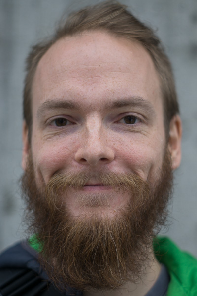

Who am I?
- Full-time Researcher/PhD-student with the KIT Computer Graphics Group, where I:
- Write research papers
- Develop research prototypes in
C++ - Teach courses like
- Computer Graphics
- GPU-Computing Lab
- Graphics Programming Lab
- Supervise and coach teams of 5-6 students implementing games using a strict waterfall model software development process in the Software Engineering course
- Supervise and coach student's BA & MA theses

1Languages, Libraries and Tools that I use
- C++(11,14,...), Python, Lisp, Javascript, Java/C#, Haskell, .sh, PHP
- Data-oriented design
- CUDA, OpenCL, OpenGL, DirectX
- (Py-)Qt, Swing
- Emacs, Org-Mode, Visual Studio
- Getting Things Done, project management, Quantified Self
- LaTeX, TikZ
- HTML, CSS
- SQL, NoSQL
- Linux, Windows
- Illustrator, Photoshop, Lightroom
- German, English, a tiny bit of French
2My Interests
- Computer Graphics
- Global illumination
- Offline/realtime/interactive
- Physically-based
- Raytracing/visibility
- Spatial Datastructures
- Game Development
- Gameplay analysis
- Procedural generation
- Competetive games
- First- and third-person games
- Roguelikes
- Programming languages